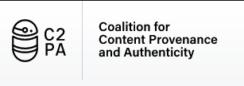

API-first Digital Trust for Infrastructure | Machines | Source Code | Applications | Digital Media | Messaging
The power of PKI, with uncompromising freedom to build and innovate with trust
Contributing Member

Trust Agility
API-first trust services that enable integrity and authenticity at every layer of the stack
Targeted
Delivers environment, application, and content-specific trust context, secured with the power of PKI.
Flexible
Trust relationships are transparent and can be curated, even after application trust stores have been bootstrapped.
Federated
No single entity makes trust, moderation, or censorship decisions. Organizations provably own their artifacts and content.
Modern
An API-first approach, CLI, SDKs, and toolkits make it easy for app developers and IT teams to generate and tap trust signals to build systems with integrity and trust.
Noosphere is uniquely positioned to develop API-first trust services that help organizations comply with emerging content authenticity standards, such as C2PA and CAI.
Distributed and Scalable
Integrates real-time integrity and validation checks with trust stores for any user agent.
Secure
Extends Web Public Key Infrastructure (PKI) to enable non-hierarchical, but still ungameable and unhackable, trust relationships.
Easily integrated and extensible
API-first approach enables app, platform and infra developers easily integrate and innovate on trust services.